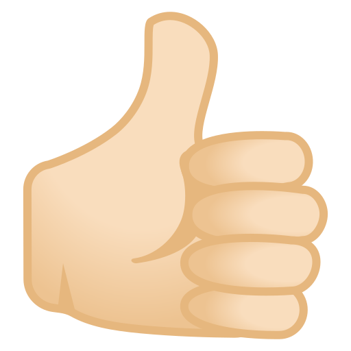

Assalamu’alaikum Warahmatullahi Wabarakatuh / Salam Sejahtera,
Sehubungan dengan pelaksanaan Pemilihan Kepala Desa (Pilkades) Serentak Tahun 2026, kami mengundang Bapak/Ibu/Saudara/i Warga Desa untuk memberikan suara di Tempat Pemungutan Suara (TPS) pada:
Hari / Tanggal : Ahad, 15 November 2026 • Pukul 07.00 – 13.00 WIB
Tempat : Balai Desa / TPS setempat
Berkas identitas pemilih adalah sebagai berikut:
Harap hadir tepat waktu dengan menunjukkan QR pada undangan ini kepada pemindai di TPS untuk mulai menggunakan hak pilih. QR pada undangan ini bersifat umum dan dapat difotokopi — tidak perlu menuliskan nama; satu QR berlaku untuk semua pemilih.

Letakkan Ibu Jari di Sini